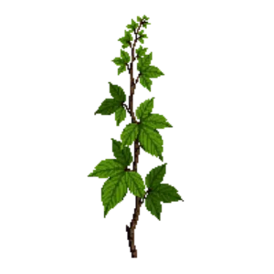

California Grape 'Roger's Red'
Vitis californica 'Roger's Red'

California Grape 'Roger's Red' is a climber for structure, suited to full sun and loam or sandy soil, flowering May, Jun.
| Type | Climber |
|---|---|
| Mature height | 600 cm |
| Spread | 300 cm |
| Aspect | full sun |
| Foliage | Deciduous |
| Hardiness | USDA 7a-10a |
| Pollinator-friendly | No |
| Pet-safe | No |
Where to use it in a border
At around 600 cm, it sits best toward the back of a border, or on its own as a focal point with room around it. Give it about 300 cm of room to spread. It is hardy across USDA zones 7a to 10a, so check it suits your area before planting.
It appears in our lists of full sun, sandy soil.
Flowering through the year
Worth knowing
- Not recorded as pet-safe; site it away from pets that graze if that matters to you.
Good companions
Plants that share its conditions and style, chosen to complement its place in the border:
- Angelita Daisyto edge in front
- Aromatic Asterto edge in front
- Autumn Sageto edge in front
- Beach Sunflowerto edge in front
- Bearberryto edge in front
- Black Daleato edge in front
Garden styles
Native Wildlife garden Xeriscape (low-water)
See California Grape 'Roger's Red' set in a full border, with spacing and companions worked out for your own conditions, in Border Builder.
Sources
Bloom timing and hardiness drawn from:
- NC State Extension Vitis species data (plants.ces.ncsu.edu, 2026-05)